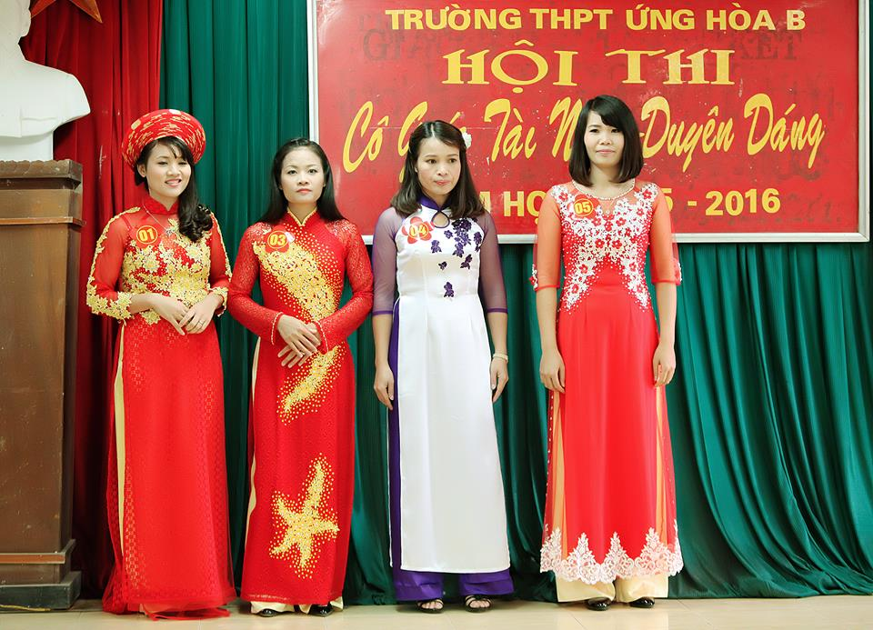
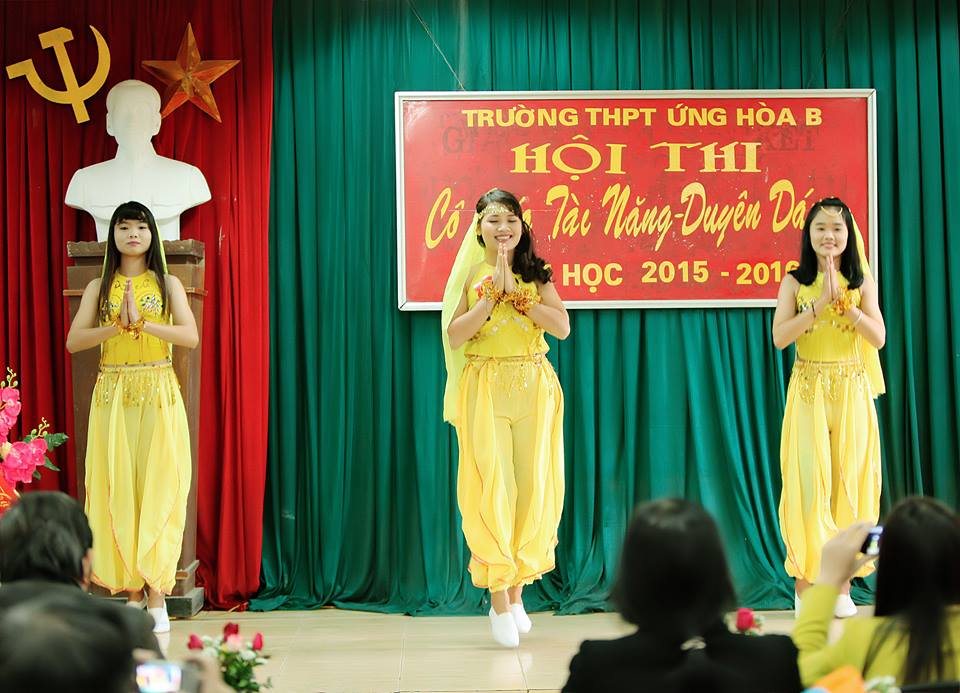
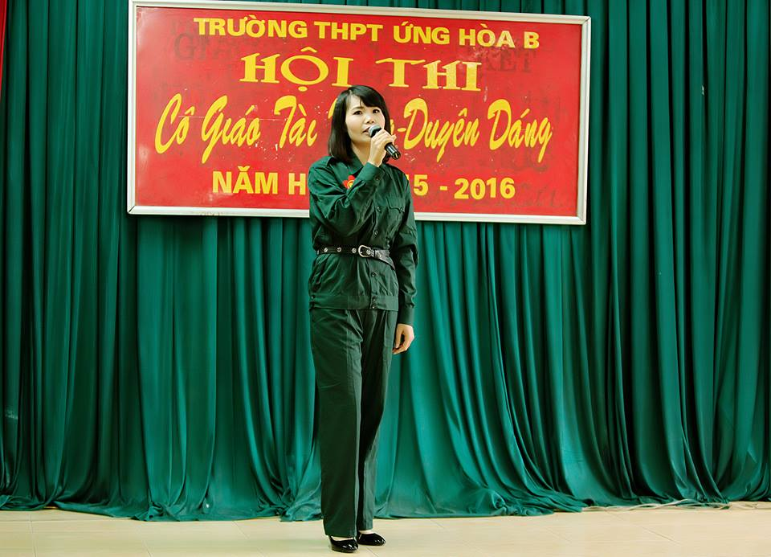
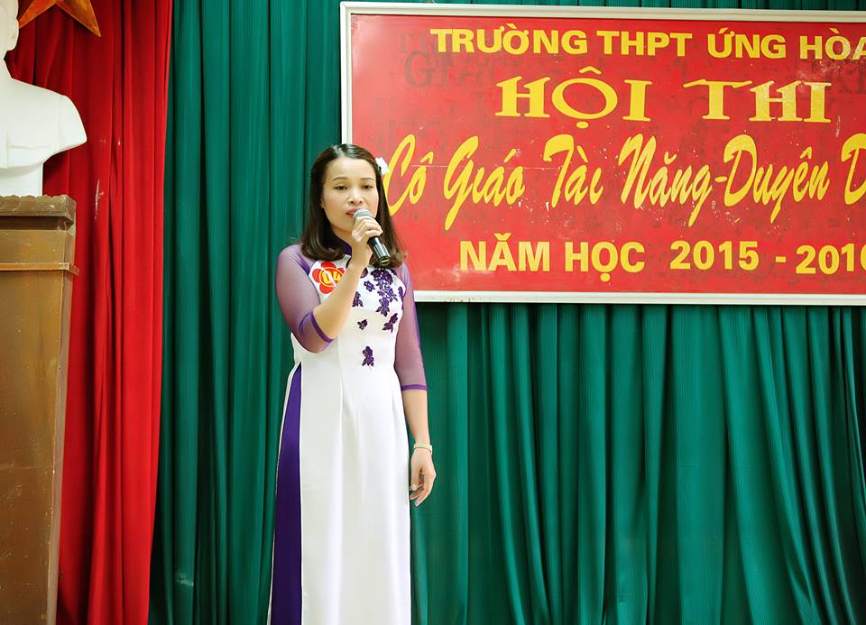
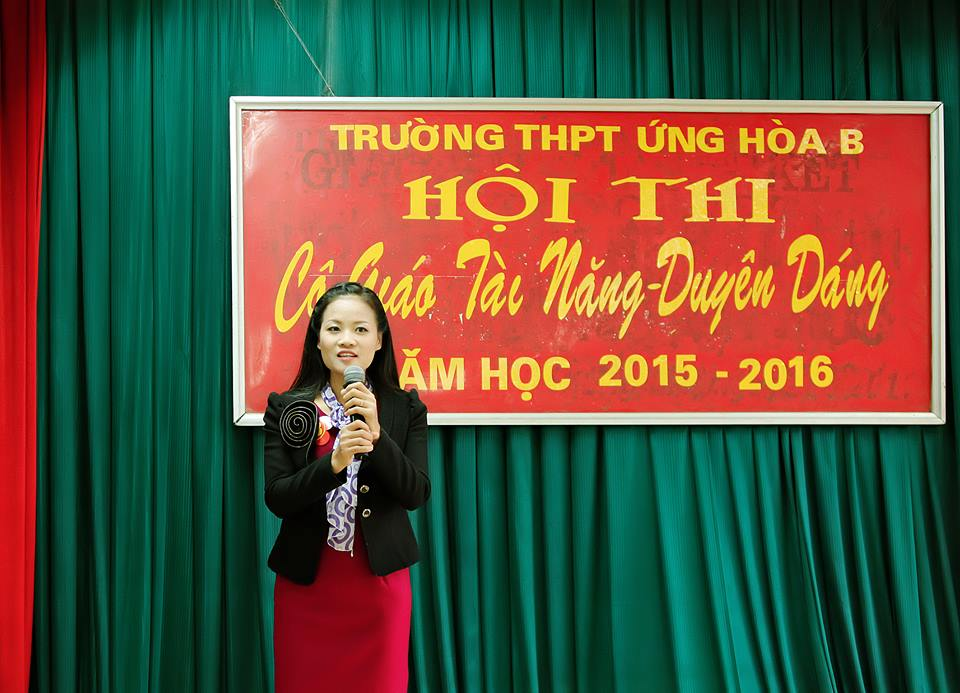
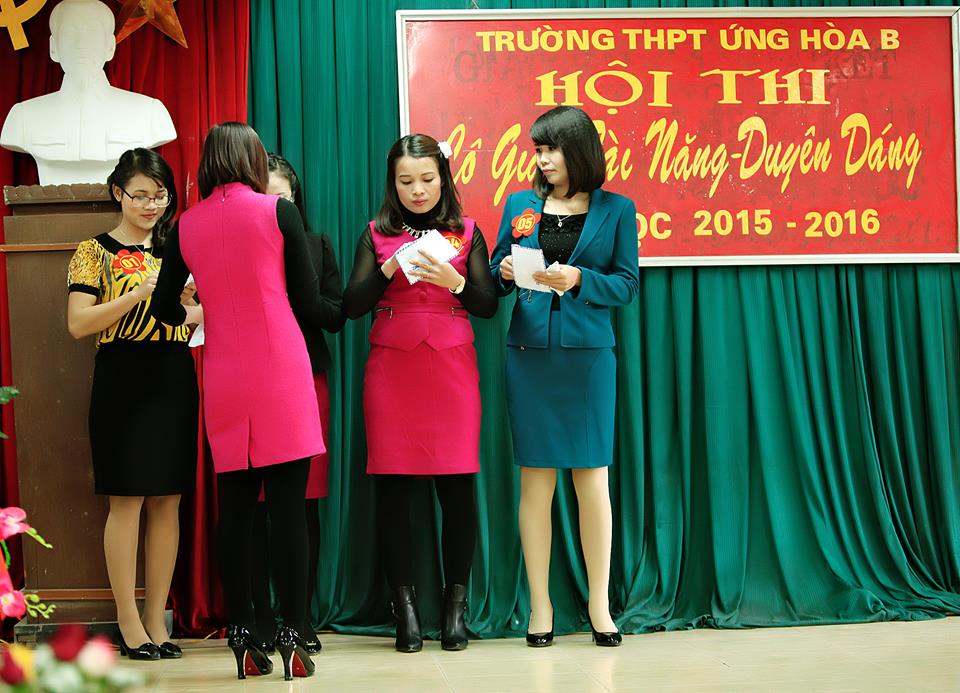
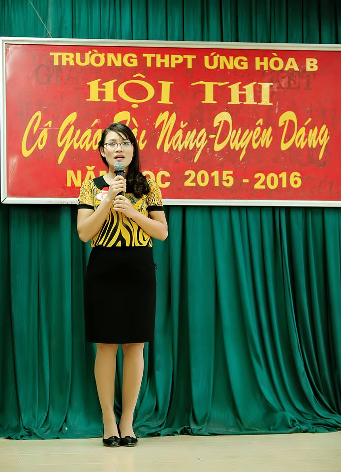
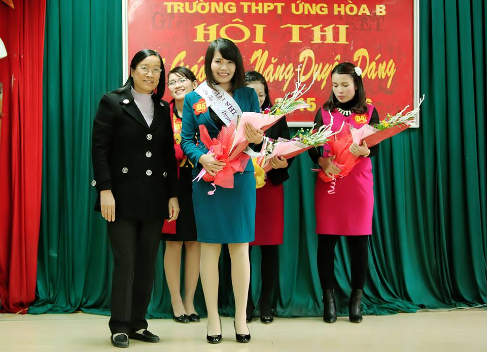
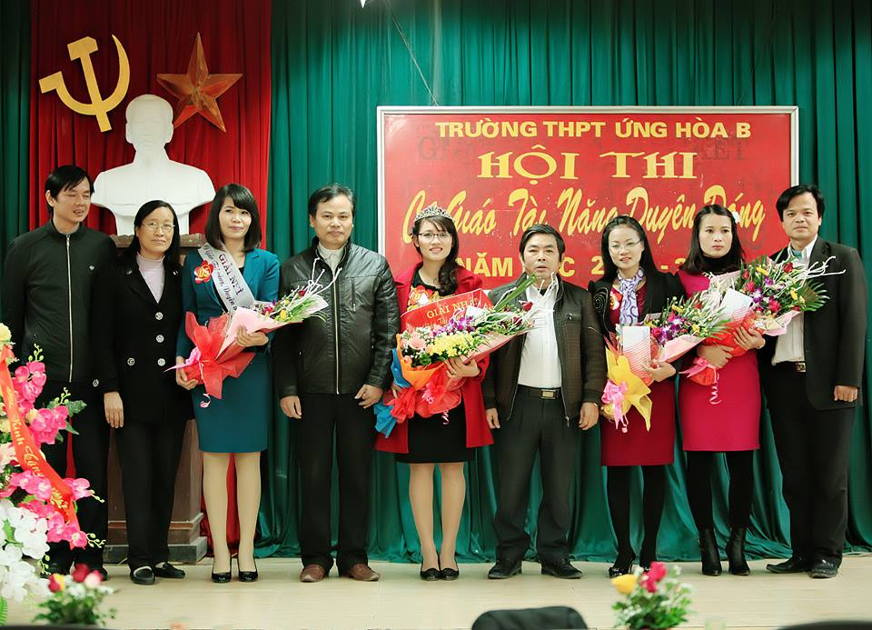

Hội thi "Cô giáo tài năng duyên dáng" trường THPT Ứng Hòa B
Căn cứ việc thực hiện kế hoạch Liên tịch số 06 ngày 02/10/2015 của Sở GD&ĐT , Công đoàn Giáo dục Hà Nội về việc phối hợp công tác giữa Ban Giám đốc sở GD&ĐT và Ban Thường vụ Công đoàn ngành Giáo dục HN năm học 2015-2016 tổ chức Hội thi “ Cô giáo tài năng duyên dáng ngành GD&ĐT Hà Nội”. Ban giám hiệu, Công đoàn trường THPT Ứng Hòa B quyết định tổ chức hội thi : Cô giáo tài năng duyên dáng cấp trường. Ngay từ buổi họp triển khai kế hoạch tổ chức hội thi, Ban giám hiệu phối hợp với Ban chấp hành công đoàn trường THPT Ứng Hòa B đã xác định: “Hội thi ngoài mục đích lựa chọn cô giáo tham gia dự vòng thi các cấp, đây chính là cơ hội để Công đoàn nhà trường đẩy mạnh hơn nữa tinh thần đoàn kết, tạo môi trường, sân chơi tập thể cho các nữ công đoàn viên thể hiện hết những năng lực, thế mạnh của mình bên cạnh việc đầu tư nâng cao chuyên môn, nghiệp vụ”. Chính vì lẽ đó, hội thi “ Cô giáo tài năng duyên dáng Trường THPT Ứng Hòa B” được Ban giám hiệu, Công đoàn trường cũng như hội đồng sư phạm và các thí sinh đặc biệt quan tâm đầu tư rất công phu, đặc sắc: từ sân khấu, âm thanh, phục trang và thành viên ban giám khảo.
Thứ 4 ngày 31 tháng 12 năm 2015 tại sân khấu trường THPT Ứng Hòa B, hội thi “ Cô giáo tài năng duyên dáng" trường THPT Ứng Hòa B đã diễn ra rất sôi nổi, hấp dẫn. Đến dự hội thi có đông đủ cán bộ giáo viên nhân viên nhà trường.
Trong bài phát biểu khai mạc hội thi thầy giáo Tạ Duy Hiển - Phó Bí thư chi bộ, Phó Hiệu trưởng nhà trường nhấn mạnh: “Trường THPT Ứng Hòa B được biết đến bên cạnh nhiều thành tích trong dạy và học, thì đây còn là ngôi trường có rất nhiều nữ cán bộ, giáo viên nhân viên đa sắc, đa tài. Các cô giáo không chỉ là những giáo viên chuyên môn vững vàng, thành tích giảng dạy nổi bật, mà còn rất chú ý để luôn giữ gìn và phát huy tốt những truyền thống của người phụ nữ Việt Nam. Các cô giáo của chúng ta, không chỉ giỏi việc trường, đảm việc nhà, không chỉ dạy tốt mà còn là những cô giáo nhiều tài năng trong tất cả các lĩnh vực văn hóa, xã hội, thể dục thể thao…”
Các cô giáo lần lượt trải qua bốn phần thi: Trang phục áo dài, trang phục dạ hội, hiểu biết, xử lý tình huống và tài năng. Mỗi một phần thi, các cô đều có sự chuẩn bị chu đáo, bằng tất cả sự nghiêm túc, chỉn chu vốn có của nghề nghiệp mang lại.
Phần trình diễn trang phục áo dài
Sự duyên dáng trong tà áo dài có lẽ là hình ảnh rất quen thuộc của nghề dạy học. Nhưng hôm nay, trên sân khấu, với sự trau chuốt hơn về trang phục, vóc dáng, các cô đẹp hơn, mới lạ hơn, cuốn hút hơn trong ánh mắt đồng nghiệp.
Ấn tượng nhất là phần thể hiện tài năng của các cô giáo.
Những bước nhảy sôi động, cuốn hút của cô Ngô Thị Tuyết với vũ điệu múa Ấn Độ cùng với màn múa phụ họa của 2 học sinh do cô giảng dạy
Tràn ngập không khí cách mạng qua ca khúc “Cô gái mở đường" với giọng ca của cô giáo Chu Thị Hiền Nga
Giọng ca ngọt ngào của cô giáo Đặng Thị Hà với ca khúc " Quê Hương "
Tâm sự về nghề giáo được thể hiện qua ca khúc "Bài ca người giáo viên nhân dân" của cô giáo Dương Thị Hồng Hạnh
Phần thi hiểu biết và xử lý tình huống được khán giả chờ đợi nhất. Những câu hỏi hóc búa đã không thể làm khó được các thí sinh- những cô giáo đầy bản lĩnh và có kinh nghiệm trong ứng xử tình huống thực tiễn. Những câu trả lời hết sức khéo léo, vừa mang tính giáo dục vừa thấm đậm tính nhân văn sâu sắc, rất riêng của nghề dạy học
Các cô giáo bốc thăm câu hỏi phần thi hiểu biết và xử lý tình huống sư phạm
Cô giáo Ngô Thi Tuyết trong phần thi hiểu biết và xử lý tình huống
Cô Nguyễn Thị Khang - Tổ trưởng tổ Sinh - Địa - Thể Dục - QPAN trao giải Nhì cho cô giáo Chu Thị Hiền Nga
Ban tổ chức chụp ảnh lưu niệm